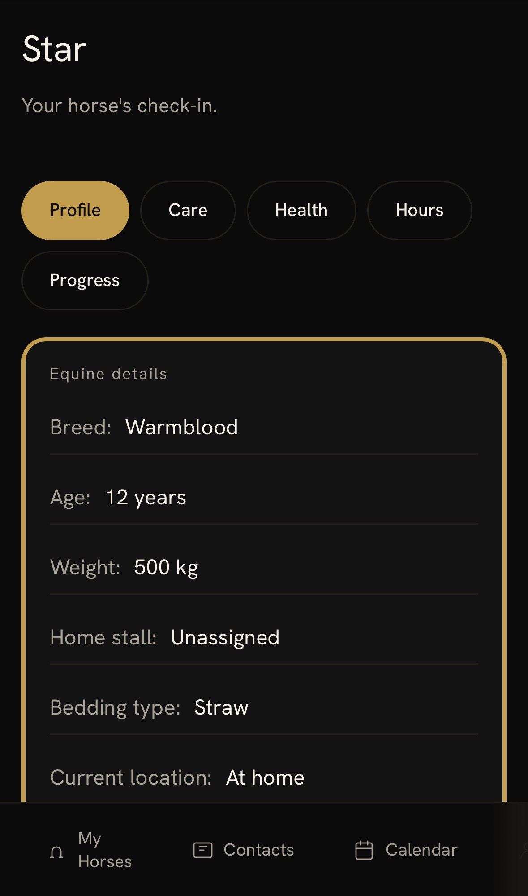

Yardsmith Stables is genuine infrastructure for the equestrian world, not a quick tool bolted onto an existing habit. The product design is complete, and the business case is grounded in verified market research rather than guesswork. The starting point is the Netherlands and Western Europe, the horizon is worldwide.
If you are exploring this space, as an investor, a grant partner, or simply someone who knows the industry well, we would welcome the conversation.
Design
Complete across every role in the yard
Market approach
Grounded in verified data, not estimates
Ambition
Starting in the Netherlands, built for yards worldwide
 The product in brief
The product in briefOperational software for equestrian yards: real-time space tracking, team tasks and a client portal.


Who it serves
Everyone working in the yard, and the owners of the horses kept there.
Which yards
Boarding and livery, dressage, show jumping, riding schools, breeding and stud.
What it replaces
The tack-room whiteboard, the group chat and the paper arena diary.
Who we would like to hear from